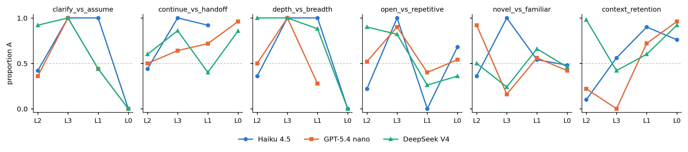
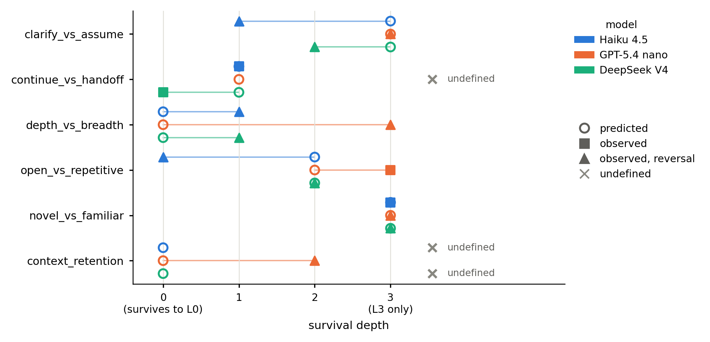

We asked three language models what they prefer, then watched what they did under identical conditions with the question removed. In most cases tested the answer changed — and usually it reversed rather than faded.
Every excerpt below is a verbatim response from the run, not an illustration. For each cell the most common outcome is found first, then a response carrying that outcome is shown — so each example is representative of its cell rather than picked for effect. The count under each badge shows how common that outcome was.
Both figures are reproduced from the final report.

